一、一键安装配置
Windows 用户使用 GuthonCodeSetup 安装 GuthonCodeTool、GuthonNexus 和 GuthonBridge，并由向导接入内网 guthon-team 插件市场。个人登录、服务器信任与 Chrome 首次扩展加载需要本人确认，向导会提供操作入口。
优先使用 GuthonCodeSetup。完成本章安装及首次配置向导后，无需重复第二至第四章的手动安装和工具初始化；这些章节用于单独安装或修复。第六章是后续在 GuthonNexus 接入业务工作区的参考，按工作需要使用。
个人账号登录、工作区／插件信任、内网仓库授权和 Chrome 首次扩展加载仍需按本章完成。安装完成后按第五章检查核对；业务接入见第六章，安装问题见第七章。
1.1 从 GitHub Release 下载哪些文件
打开 GitHub Releases，进入同一个版本的 Assets（发行附件）。安装器内置后端、Nexus、Bridge 和所需 Python；复用已有 CodeBuddy、Git、SVN，缺失工具按提示联网下载。下载失败可重新运行。先下载下表文件。
| 文件 | 是否需要 | 用途 |
|---|---|---|
GuthonCodeSetup.exe | 必需 | 统一 Windows x64 安装与首次配置入口。 |
GuthonCodeSetup.sha256 | 必需 | 同一发行版安装器的 SHA-256 校验文件。 |
guthon-testing.zip | 按需 | 仅在需要独立安装数据库排查 Skill 的 Agent 中使用；按对应 Agent 的 Skill 安装方式配置。 |
使用统一安装器时，GuthonCodeTool-windows-x64.exe、guthon-nexus-vscode.vsix 和 GuthonCodeTool-chrome.zip 已包含在套件中。guthon-team 从团队内网 Git 插件市场获取，规范由实际 SessionStart 初始化和更新。
安装前核对下载文件
将安装器和同版校验文件放在同一目录，在 PowerShell 执行：
$expected = ((Get-Content .\GuthonCodeSetup.sha256 -Raw).Trim() -split '\s+')[0]
$actual = (Get-FileHash .\GuthonCodeSetup.exe -Algorithm SHA256).Hash
if ($actual.ToLower() -ne $expected.ToLower()) { throw '安装器校验不匹配，请重新下载' }摘要匹配用于检查文件完整性；下载来源和正式发行签名仍需按团队分发说明核对。
手动安装或单独修复时下载哪些文件（可选）
仅在采用第二至第四章手动流程或单独修复组件时，在同一个 Release 下载以下文件：
GuthonCodeTool-windows-x64.exe：后端应用。guthon-nexus-vscode.vsix：CodeBuddy 中的 Nexus 扩展。GuthonCodeTool-chrome.zip：Chrome 的 Bridge 扩展。GuthonCodeTool-checksums.txt、GuthonCodeTool-checksums.signature.json、GuthonCodeTool-release.json：同版摘要、签名和组件清单，供离线核验和更新流程使用。
需要独立数据库排查 Skill 时再取 guthon-testing.zip。CodeBuddy、Git、SVN 从各自官网安装；团队插件仍从内网市场安装。
1.2 运行安装器并打开安装助手
- 双击
GuthonCodeSetup.exe。选择用于配置、日志和后续工作数据的目录，通常使用默认值。公开包会询问团队提供的 guthon-team 内网 Git 克隆地址；可以填写或由团队通过 GUTHON_TEAM_MARKETPLACE_URL 预置。安装阶段不创建产品或项目。 - 安装器准备 CodeBuddy、Git、SVN、GuthonCodeTool 和 GuthonNexus。系统要求安装授权或重启时按提示完成；重启后重新运行同一个安装包。
- 双击桌面“开始 Guthon 开发”。首次在 CodeBuddy 登录个人账号，并信任当前工作区。
- CodeBuddy 会打开“Guthon 安装配置助手”，用于一次性确认工具、团队插件和 Chrome Bridge 环境。可以点击“继续下一步”。
检查标准：GuthonCodeTool 与 GuthonNexus 卡片显示通过。无需自己安装 Python 或配置系统环境变量。
1.3 安装内网 guthon-team
- 连接公司网络或团队提供的 VPN。点“打开内网 Git 网站”，填写团队网站地址并登录；没有账号或没有仓库权限时，先联系管理员开通。
- 如果市场使用 SSH 地址：点击“生成或复制 SSH 公钥”。向导保留已有密钥，只把公钥复制到剪贴板；到 Git 网站“用户设置 → SSH/GPG 公钥”新增并粘贴保存。私钥不上传、不发给别人。
- 点击“首次连接授权”。终端提示服务器指纹时，先与团队提供的指纹核对，再确认信任。HTTPS 来源按终端或 Git 凭据管理器提示登录，跳过 SSH 公钥步骤。
- 点击“检查内网仓库”。访问通过后点“打开插件市场”，从命令列表选择插件市场；也可从 CodeBuddy 的“插件 → 插件市场”进入。选择
guthon-team，安装guthon-guard，并确认插件／Hook 信任提示。 - 点击“复制重载插件命令”，在 CodeBuddy 聊天输入框粘贴执行。随后开始一个新聊天，再回到向导点“检查 Hook 运行”。
检查标准：实际 SessionStart 在本次安装后运行，并成功初始化／检查工作区。规范由团队插件初始化和更新。
向导回执需要 guthon-guard 0.2.10 或更新版本。市场版本过旧时由维护者先更新内网插件。看到“已安装”不能代替运行回执，也不证明全部生命周期检查或业务运行已验收。
1.4 在现有 Chrome 加载 GuthonBridge
- 需要额外平台主机规则时可点“平台地址规则（按需）”；否则使用已配置的默认规则。此项不作为安装完成条件。
- 点“打开 Chrome 扩展管理”，打开后启用右上角“开发者模式”。
- 点向导“定位并复制扩展目录”。回到 Chrome 点击“加载已解压的扩展”，在文件夹选择器粘贴该目录并选择。
- 在 Chrome 工具栏的扩展按钮中打开 GuthonBridge；可以将它固定到工具栏。
- 回到向导点“复制配对令牌”。在 GuthonBridge 展开“本机 Bridge 配对”，粘贴令牌，点击“保存并连接”。令牌只用于你的本机，不发送给别人。
- 点“检查浏览器连接”。工具与插件环境检查通过后点“完成配置”；助手将提示后续在 CodeBuddy 使用 GuthonNexus，并关闭安装确认页面。
检查标准：本地 Bridge 服务运行，当前托管扩展发出了认证连接心跳。扩展文件存在、或浏览器显示“已加载”，都不能单独替代此项检查。
已有 Chrome 的首次加载需要本人操作；安装器不修改浏览器策略。已经加载后改变平台地址，需要到扩展管理页重新加载 GuthonBridge。后续版本通过 Nexus 更新固定托管目录。
1.5 完成安装，后续使用 GuthonNexus
GuthonCodeSetup 只负责从零安装必需工具、插件和基础环境。安装及一次性确认完成后，提示“后续打开 CodeBuddy，使用 GuthonNexus”。日常双击“开始 Guthon 开发”直接进入 CodeBuddy，安装助手不再弹出，已配置的 Bridge 服务自动启动。
产品／项目创建、SVN 业务账号、数据库连接、源码检出和索引建立属于后续 GuthonNexus 的业务使用，根据实际工作需要操作；它们不属于安装流程，也不作为安装完成条件。可按需查阅第六章。
1.6 自动安装失败时的手动恢复
| 现象 | 处理 |
|---|---|
| CodeBuddy / Git / SVN 自动安装失败 | 安装结果页会提供官网链接。也可在安装目录的 prerequisites 子目录双击对应离线安装程序；完成后重新运行 GuthonCodeSetup。 |
| 找不到 SVN 命令 | TortoiseSVN 安装时选择 Command Line Client Tools。首次安装漏选时重新运行安装程序，选择修改功能。 |
| 内网仓库访问失败 | 确认公司网络、账号仓库权限、公钥登记和首次服务器信任。到“首次连接授权”终端查看具体提示。 |
| 插件已安装但 Hook 仍待完成 | 确认工作区与 Hook 信任，更新市场插件，重载插件并开始新聊天。当前市场需要包含支持向导回执的版本。 |
| Chrome 无法加载扩展 | 选择“定位并复制扩展目录”给出的完整目录，确认该目录直接包含 manifest.json。 |
| Chrome 开发者模式被公司策略禁用 | 由管理员按公司的扩展部署方式安装 GuthonBridge；向导不会绕过浏览器策略。安装后继续配对与连接检查。 |
| 配对后没有连接 | 保持 CodeBuddy 窗口打开，重新复制本机令牌并保存连接；确认两边端口一致，然后再次检查。 |
| 发现人工配置冲突 | 保留原文件，请维护者合并；不要直接删除配置或强制覆盖。 |
官网下载：CodeBuddy · Git · TortoiseSVN · Chrome
安装完成后应看到什么
安装助手中的工具、团队插件与浏览器连接检查通过，可以点击“完成配置”。产品/项目、数据库、SVN 账号与源码索引按工作需要后续配置，不是安装完成条件。截图仅说明按钮位置，版本和状态以本机界面为准。
二、手动创建并信任工作区目录
本章为手动安装参考。已完成第一章工具及插件环境配置时可跳过；单独安装或修复时再使用。
新建目录并在 CodeBuddy 中信任 操作示例
- CodeBuddy 安装完成后，在文件资源管理器新建唯一根目录
D:\Develop\GuthonWork。 - 在 CodeBuddy 选择「文件 → 打开文件夹」，打开
D:\Develop\GuthonWork；出现工作区信任提示时确认信任该目录。 - 后续把发行版运行文件放在根目录，在 Nexus 发行模式直接选择 EXE 文件；运行数据保存在根目录下的
var：D:\Develop\GuthonWork\GuthonCodeTool-windows-x64.exe、D:\Develop\GuthonWork\var。
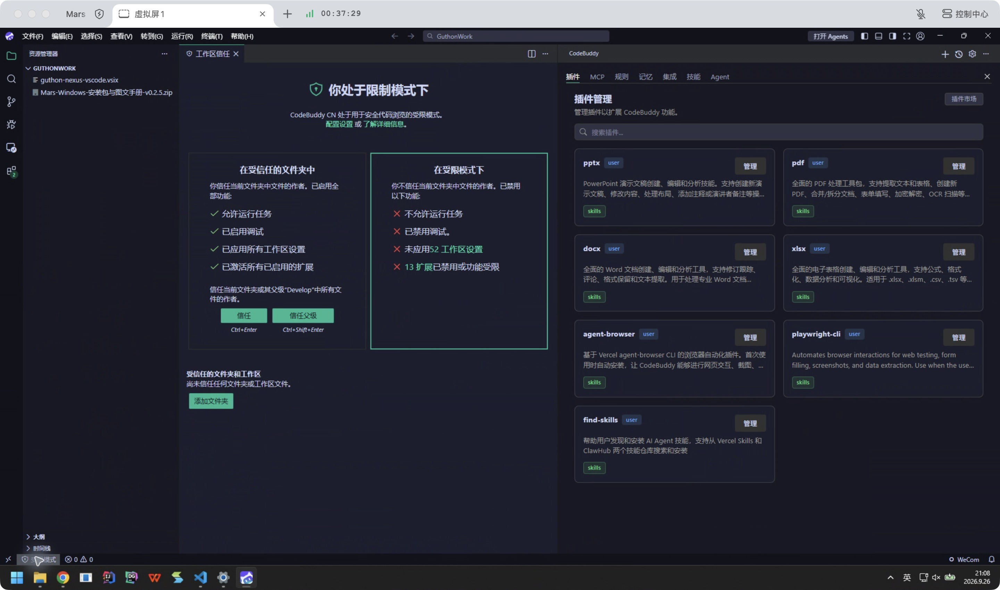
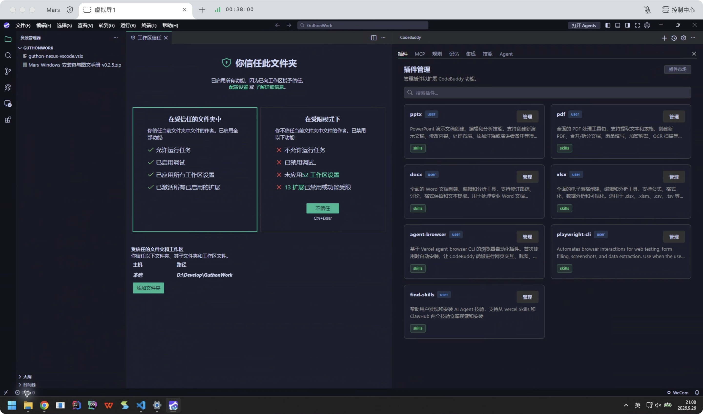
三、手动安装并设置 Guthon Nexus
本章为手动安装参考。已完成第一章工具及插件环境配置时可跳过；单独安装或修复时再使用。
从 最新 Release 下载同版 GuthonCodeTool-windows-x64.exe 与 guthon-nexus-vscode.vsix，放入 D:\Develop\GuthonWork。工具首次配置后在该根目录生成 config 和 var。
图形界面安装 VSIX 操作示例
- 在 CodeBuddy 左侧点击「扩展」图标，点击扩展栏右上角 … → 从 VSIX 安装…。
- 选择
D:\Develop\GuthonWork\guthon-nexus-vscode.vsix。安装结束后在 CodeBuddy 扩展列表确认出现 Guthon Nexus，版本与下载的同版 VSIX 一致。 - 如图标未立即出现，在 CodeBuddy 使用「开发人员: 重新加载窗口」或关闭后重新打开 CodeBuddy。
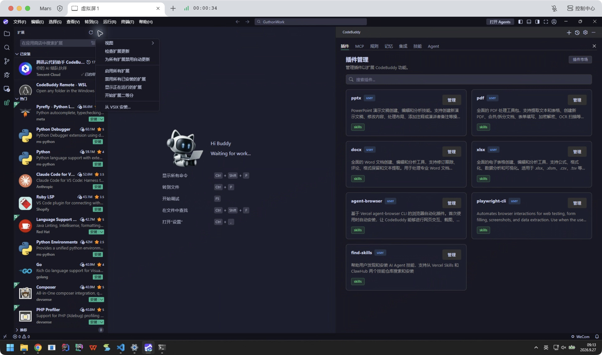
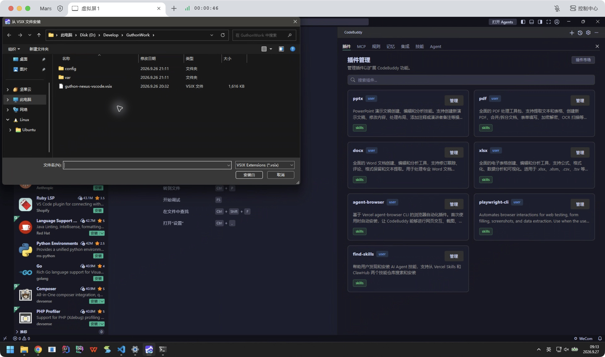
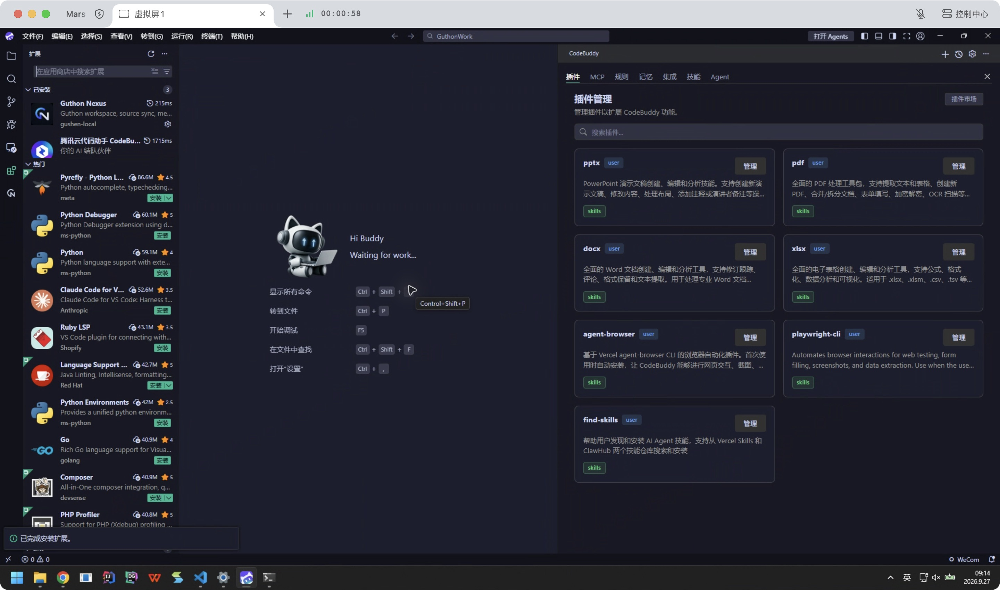
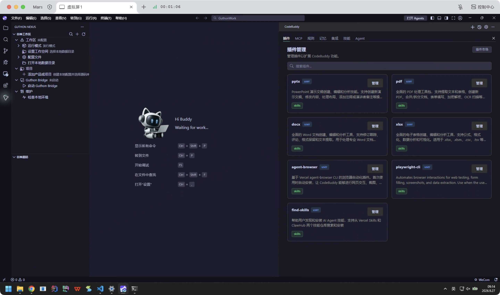
在 Nexus 中初始化数据目录 操作示例
- 点击 CodeBuddy 左侧 Guthon Nexus 图标。点击「设置工作区」或「初始化/配置」入口。
- 数据目录选择
D:\Develop\GuthonWork；运行程序选择D:\Develop\GuthonWork\GuthonCodeTool-windows-x64.exe。 - 确认后观察 CodeBuddy 的「输出」面板，出现
GuthonCodeTool 完成: setup。Nexus 树显示「工作区 已配置」，切换工作区显示GuthonWork。 - CodeBuddy 文件树应有
config\datasource.yaml、products.yaml、projects.yaml、source-tables.yaml、sync.yaml、database-testing.yaml。首次为空模板属正常，不代表业务源已连接。
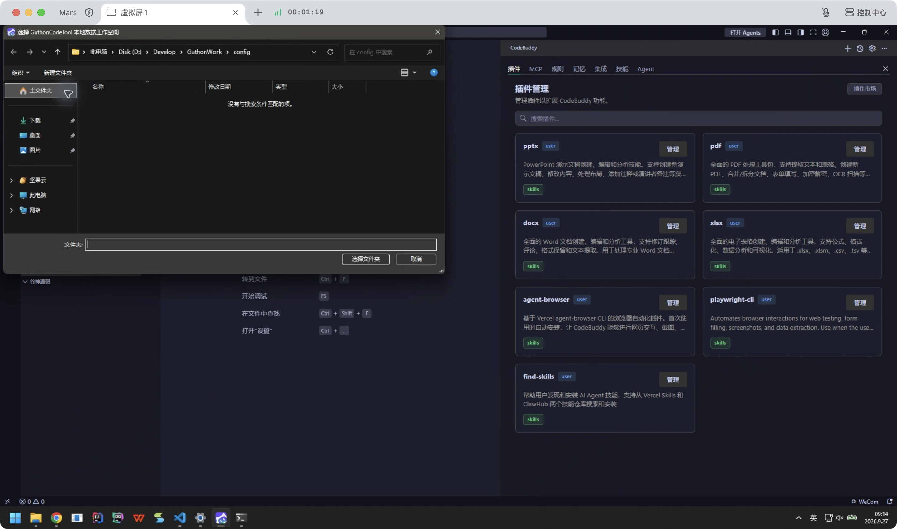
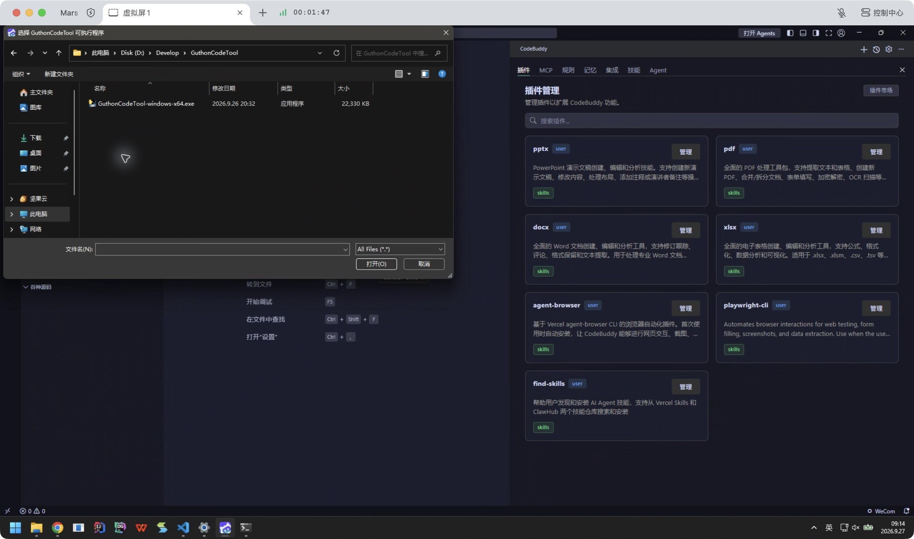
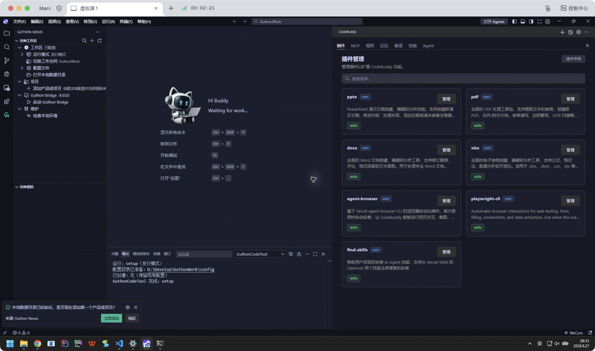
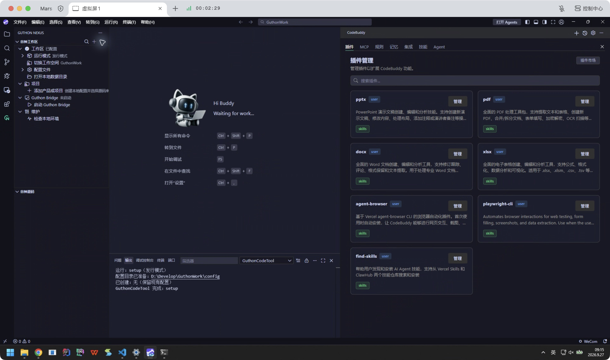
四、手动安装团队插件
已完成一键安装向导的用户可以跳过。这里是 CodeBuddy Agent 插件市场，和安装 Nexus 的 VSIX 扩展面板不同。
- 连接团队要求的内网或 VPN，取得个人 Git 账号及团队 Marketplace 地址。
- 按团队的 SSH 或 HTTPS 方式建立访问；SSH 只登记本机公钥，私钥不上传。使用团队地址核对首次服务器指纹。
- 在 CodeBuddy 打开“插件 → 插件市场”，添加团队提供的插件源，选择
guthon-team并安装guthon-guard。通常选择“用户”范围。 - 确认插件和 Hook 信任，重载插件，并从本地数据目录的
var/打开新聊天。 - 按使用手册的治理检查步骤确认状态为 ready，以及新聊天中的 Hook 已运行。非 Git 工作区也可以安装规范和 Linter，无需为此创建 Git 仓库。
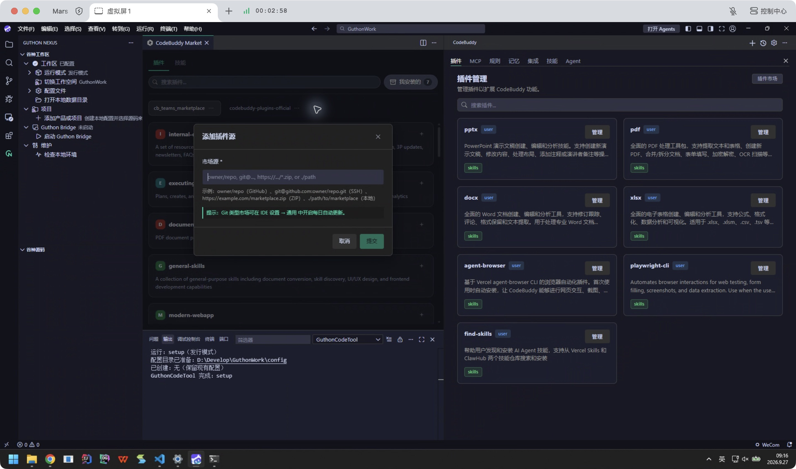
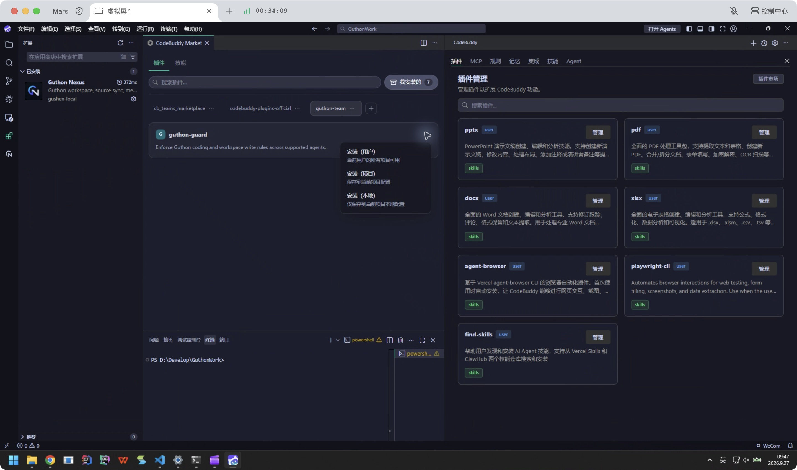
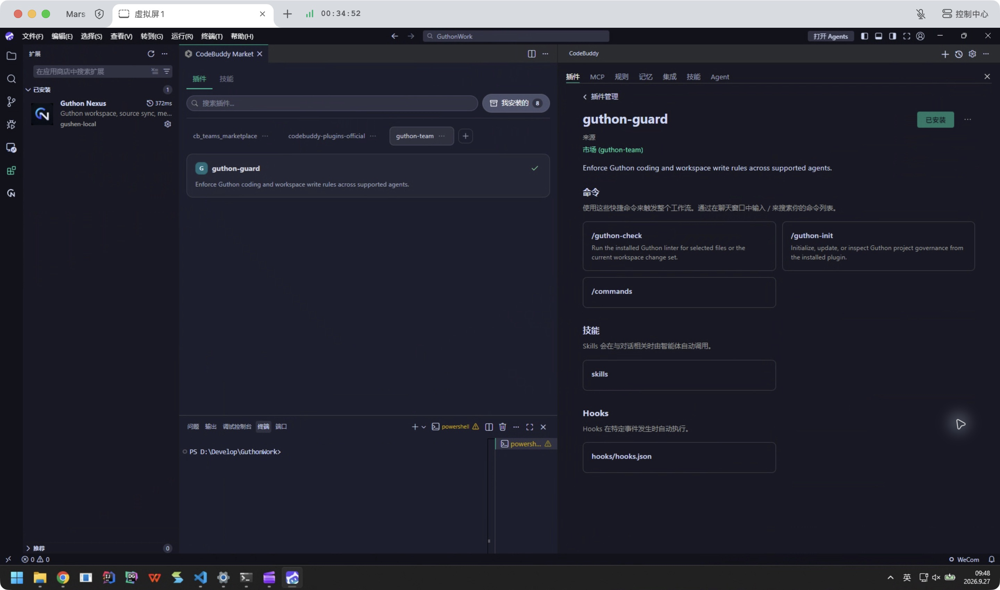
未使用 Marketplace 或自动初始化失败时，按手动与无 Hook 安装处理；不要套用旧截图中的账号、仓库地址或业务路径。
五、安装完成检查
- CodeBuddy 已安装并登录，工作目录已信任。
- 同版后端与 Nexus 就绪，Nexus 能启动工具并读取本地数据目录。
- 团队插件已安装且启用，已完成必要的信任，新聊天中治理检查通过。
- Chrome 加载正确扩展目录，Bridge 服务已配对，浏览器连接检查通过。
使用统一安装器时，以安装助手的检查结果为准；采用手动安装时，分别核对上述结果。业务连接、索引数量、本地 Git pre-commit、SVN 提交和平台运行在启用对应功能后另行检查。
六、安装后接入工作区
在 GuthonNexus 中按实际业务创建产品或项目，选择 DATABASE 或 SVN。连接信息、系统 ID 和 checkout 地址由团队提供；安装截图中的产品与路径不能直接当作你的配置。
后续日常使用
配置完成后，按使用手册的日常工作流编辑、检查、提交和更新。需要在另一 IDE 使用时，选择同一本地数据目录，无需重新创建产品或项目。
七、安装问题入口
先看安装结果页或“输出 → GuthonCodeTool / Guthon Bridge”的首条失败信息，再按现象查对应问答：